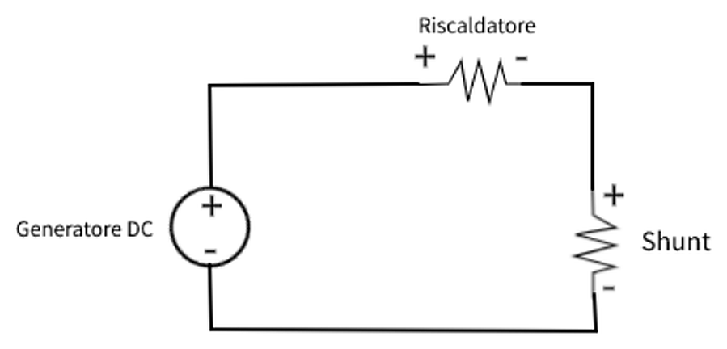
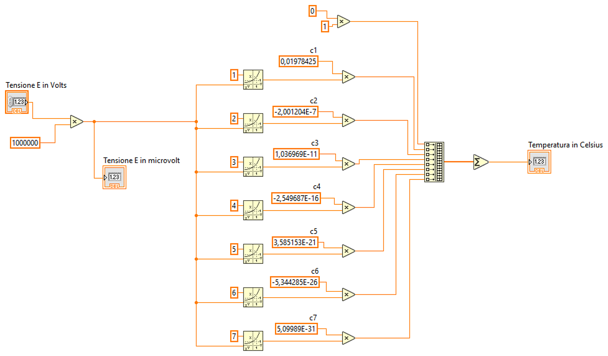

The goal
The lab had a Keithley 3706 data acquisition system with a multiplexer card, but no software to use it in its tests. My task was to write the programs that control it from the PC, one for each experiment, starting from scratch: communication with the instrument, channel configuration, acquisition, display and data saving.

The acquisition system
The 3721 multiplexer card routes the instrument signals to the Keithley channels; each channel is identified by slot and number, for example 1012 is channel 12 of slot 1. The integration time is set to 1 PLC, i.e. 16.67 ms with 60 Hz mains: the interval in which measurement noise is lowest.
The instrument is programmed in Lua. From the PC, LabVIEW communicates with it through NI-VISA, the interface that translates commands into a format the Keithley understands, and through the 3706 driver library, which groups the VISA functions into specific subroutines. For the parts the drivers did not cover I sent Lua commands directly, for example to run the scan and read the measurement buffer.
Experiment 1: natural convection between two walls
Two facing vertical walls are heated by resistors powered by two DC supplies. There are 6 thermocouples on the first wall and 5 on the second, plus two for the inlet and outlet air and one on the outer surface. We tested six wall spacings, from 0.5 to 7 cm.
The thermal power of each heater is computed from the voltage across it and the current, which is derived from the voltage drop across a 0.1 Ω shunt in series. Besides the thermocouples, the program therefore acquires the voltages across shunts and heaters of both circuits.

The program
The program panel has two parts. In the configuration you set the scan parameters for shunts, heaters and thermocouples, the waiting time between scans and the output file, and you read live the current, resistance and power of each wall. The output shows the plots of the wall temperatures, the average temperatures and the air temperatures, and the tables with all the scans. At the end of the test the data are saved to file in columns ready for processing.


I split the code into reusable subroutines. Scan.vi configures and runs a scan over a list of channels; Termocoppia_J.vi converts the thermocouple voltage into temperature with the NIST reference polynomial, T = Σ cᵢVⁱ. I wrote the same conversion for type E, K, N, R, S and T thermocouples too, so the programs can be adapted to other sensors.

Problems to solve
The first tests stopped with VISA timeout errors: reading started before the instrument had finished the scan, or the wrong number of bytes was expected. I tuned the timeouts and the bytes to read, and made the program read the buffer only up to the last written index instead of in full. The Keithley handles at most 576 channels per scan, a limit to respect when building the lists. For LabVIEW crashes I also looked for causes in reports from other users of the same instrument.
Tests and results
For each wall spacing the test followed four phases: heating with both walls, saving at steady state, switching off the second wall, saving again at steady state. The program recorded the entire temperature history.


From the steady-state temperatures we derived the Nusselt number, which measures how much convection increases heat transfer compared with conduction alone, as the spacing varies. With only one wall heated, heat transfer is stronger. With both heated, at small spacings the two hot air flows interfere and the Nusselt number drops sharply, then stabilises beyond 3 cm.


Experiment 2: forced convection in a lattice duct
The second apparatus is an 8 cm long duct with an internal lattice structure, crossed by an air flow and heated by a resistor. The thermocouples are above and below the duct and also measure the inlet and outlet air. The heating circuit is the same as in the first experiment, so I reused the subroutines, adapting the panel and channel lists.

Experiment 3: pressure losses in a duct
In the third experiment the pressure drop along a duct is measured with a Dwyer 629C03 differential transducer, which has a 0–25 psid range and an accuracy of 0.5% of full scale. I wrote a subroutine that converts the transducer output into pressure and a program that acquires it together with the air temperatures.

What I learned
It was my first project in which software had to work on a real instrument, later used by others. I learned to read the documentation of an acquisition system, to make different layers talk to each other, from LabVIEW to VISA to the instrument's Lua commands, and to write modular code that could be reused across experiments. The communication errors taught me to look for the cause methodically instead of working around it.